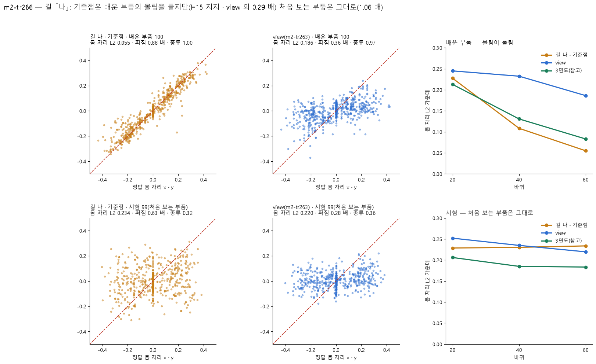

실험 m2_tr0266_h015_기준점
목표 G1.2 view 모음 → 파츠별 CAD code(CadQuery · 그 전 「3 면도 → 파츠별 CAD」 · 지금 M2 는 위 · 앞 · 옆 고정 세 장만 받음 → 아무 각도 N 장으로 바꿀 것 · 11-20) · G1 첫 제품 — 피규어 · 메카 사진 여러 장 + 치수 → 숨은선 3 면도 + 파츠별 CAD · G0 임의의 이미지 → CAD 코드 · 빌린 가정 4: 생성기기하 · 정답3D · 시점앎 · 정사영 · 갚는 계획: 길 셋(가 · 나 · 다) 비교의 두 번째 · 정답 view · 정답 각도 · 생성기 부품 — 고른 길은 m1 view · 추정 각도 · 원화CAD짝 시험지로 다시 봄 · 목표 시험지 값: 안 잼 (!)
길 「나」 — 칸(몸)마다 3D 기준점을 두고 그 점을 view 마다 각도로 투영한 자리의 특징을 읽게 하면, 비스듬한 view 에서도 m2 가 몸 자리를 배우나(몰림이 풀리나)?
판정 · H15 지지(배운 부품 기준점 / view 0.30 배 · 3면도보다도 0.66 배) — 칸마다 3D 점을 투영해 읽게 하면 비스듬한 view 에서도 몰림이 풀림 · 그러나 처음 보는 부품은 그대로(1.06 배 · 종류 0.32) — 이 구조는 외우기를 쉽게 할 뿐 넓히지는 못함(부품 1.2 만) · 넓히는 힘(데이터 양 · 고르기 일반화)은 따로 · 다음 길 다(맞춰 재기)
| 가설 | 주장 | 결과 | 근거 |
|---|---|---|---|
| H15 | 칸마다 3D 점을 두 view 에 투영해 그 자리를 읽게 하면 몰림이 풀려 몸 자리를 배운다 | 지지 | 기준점 배운 부품 0.055(좌표별 0.021 · 0.018 · 0.012 · 퍼짐 0.88 · 종류 1.00) · view 0.186 · 3면도 0.083 · 기준점 / 3면도 0.66 [0.58, 0.81] · 시험 기준점 0.234 대 view 0.220(1.06 [0.97, 1.20]) · 3면도 시험 0.183(기준점 / 3면도 1.27) · 시험 종류 0.32 · 퍼짐 0.63 · 20 · 40 바퀴 배운 부품 0.228 · 0.108 · 끝 손실 0.91(view 3.01 · 3면도 2.51) |
분석
한 줄로
물음: view m2 가 몸들을 가운데로 모는 것을, 칸마다 3D 점을 두고 그 점이 view 에 떨어지는 자리를 읽게 해서 막을 수 있나?
답: 배운 부품에서는 막는다(H15 지지). 몸 자리 오차가 view 의 0.30 배로, 3면도보다도 낫다(0.66 배). 그러나 처음 보는 부품은 그대로다(1.06 배). 점은 몰리지 않지만 흩어져서 틀린다. 이 구조는 외우기를 쉽게 할 뿐, 처음 보는 부품으로 넓히지는 못한다.
왜 이 실험을 했나
길 가(m2-tr265)는 m1 의 덩어리 3면도에서 막혔다. 길 나는 m2 가 비스듬한 view 를 그대로 받되, 「어디를 볼지」 를 3D 점과 각도로 정해 줘서 몰림을 구조로 막는 길이다(여러 장 3D 검출 망의 DETR3D 꼴).
바꾼 것 하나
m2 디코더. 칸(몸)마다 3D 기준점 r 을 두고, 층마다 r 을 각도로 두 view 에 투영(계산)해 그 자리 CNN 특징을 읽어 질의에 더한 뒤 r 을 옮긴다(4 층). 몸 자리 출력은 마지막 r 이다. 나머지는 m2-tr263 view 갈래와 같다(부품 11,968 · 처음부터 · 60 바퀴).
결과

| 60 바퀴 | 기준점(길 나) | view | 3면도 |
|---|---|---|---|
| 배운 부품 몸 자리 오차 | 0.055 | 0.186 | 0.083 |
| 배운 부품 퍼짐 | 0.88 배 | 0.36 배 | 0.87 배 |
| 시험 몸 자리 오차 | 0.234 | 0.220 | 0.183 |
| 시험 몸 종류 맞음 | 0.32 | 0.36 | 0.46 |
| 가설 | 결과 | 판정선 | 판정 |
|---|---|---|---|
| H15 기준점 / view(배운 부품) | 0.30 [0.26, 0.34] | ≤ 0.6 지지 · ≥ 0.9 기각 | 지지 |
왜 이렇게 나왔나
확인한 것
- 20 바퀴까지는 view 와 비슷했고(0.228), 20 ~ 30 바퀴에 손실이 6.1 → 2.6 으로 뚝 떨어지며 몰림이 풀렸다. 60 바퀴 학습 손실은 0.91 로 view(3.01) · 3면도(2.51)보다 훨씬 낮다.
- 처음 보는 부품에서는 점이 대각선 둘레로 흩어진다 — 가운데로 숨지는 않지만 맞히지도 못한다. 몸 종류도 0.32 로 낮다.
짐작 (아직 확인 안 함)
- 기준점 구조는 「어디를 볼지」 를 쉽게 해서 배운 부품을 빨리 외운다. 처음 보는 부품을 맞히려면 부품 수(데이터)가 더 필요하다 — 3면도 꼴도 1.2 만 부품에서는 시험 0.18 이었다(11 만이면 0.04).
한계
- 한 번 · 60 바퀴 · 처음부터 · 정답 view · 정답 각도 · 생성기 부품.
- 망 구조가 view 갈래와 달라 매개변수 수 · 층 꼴 차이도 섞여 있다.
배운 것과 다음
기준점 구조로 비스듬한 view 의 몰림은 풀린다. 처음 보는 부품으로 넓히는 것은 다른 문제(데이터 양)다.
- 길 다(맞춰 재기) 결과와 함께 고른다.
- 고른 길로 부품 수를 늘려(생성기 11 만) 처음 보는 부품 성적을 본다.
실험 기록
- 카드 · 기준점266.py(검사 · 흐름 · 학습 · 재기 · 그림) · 잼.json · 흐름.png · 결과.png · 원본 out/설명/캐드부품/모델266(머리_020 · 040 · 060 · 곡선)